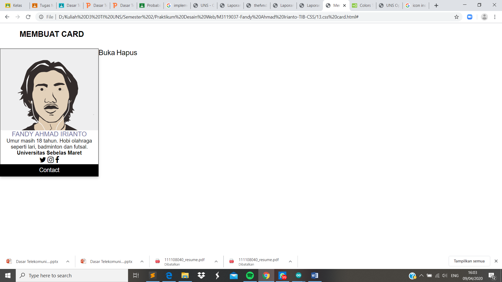

Membuat Card
Pendahuluan
Card merupakan salah satu elemen yang digunakan sebagai pembuatan tanda pengenal seseorang / akun yang nantinya akan di tampilkan dalam halaman web. Umumnya sebuah card terdiri dari nama, akun media sosial dan beberapa tambahan lain namun tidak secara lengkap. Didalam card sendiri terdapat image yang nantinya bisa kita ukur sesuai kemauan kita
Codingan
<!DOCTYPE html>
<html lang="id">
<head>
<meta charset="utf-8">
<meta name="viewport" content="width=device-width, initial-scale=1.0">
<title>Membuat Card</title>
<link rel="stylesheet" type="text/css" href="card-style.css">
<link rel="stylesheet" href="https://cdnjs.cloudflare.com/ajax/libs/font-awesome/4.7.0/css/font-awesome.min.css">
</head>
<body>
<h2>MEMBUAT CARD</h2>
<div class="card">
<div class="card-image">
</div>
<div class="card-title">FANDY AHMAD IRIANTO</div>
<p>
Umur masih 18 tahun. Hobi olahraga seperti lari, badminton dan futsal.
</p>
<h4>Universitas Sebelas Maret</h4>
<a href="#"><i class="fa fa-twitter"></i></a>
<a href="#"><i class="fa fa-instagram"></i></a>
<a href="#"><i class="fa fa-facebook"></i></a>
<p><button>Contact</button></p>
</div>
<div class="card-action">
<a href="#">Buka</a>
<a href="#">Hapus</a>
</div>
</body>
</html>
Kode CSS Eksternal
*{
margin: 0;
padding: 0;
font-family: 'Roboto', sans-serif;
}
.card{
max-width: 300px;
height: auto;
box-shadow: 0 4px 8px 0 rgba(0, 0, 0, 0.2);
margin:auto;
background-color: #FFFFFF;
border: solid thin #000000;
box-shadow: 0 0 60 #999999;
float:left;
text-align: center;
}
h2{
padding: 20px 0px 30px 60px;
}
.card .card-image{
overflow: hidden;
max-height: 250px;
}
.card .card-image img{
width: 100%
}
.card .card-title{
font-size: 20px;
font-weight: normal;
color: #7575a3;
}
.card .card-content{
padding: 15px;
font-size: 14px;
line-height: 1.6;
}
.card .card-action{
padding: 20px 15px;
border-top: solid thin #DDDDDD;
}
.card .card-action a{
text-decoration: none;
color: #FF6D00;
margin-right: 20px;
}
button {
border: none;
outline: 0;
display: inline-block;
padding: 8px;
color: white;
background-color: #000;
text-align: center;
cursor: pointer;
width: 100%;
font-size: 18px;
}
a {
text-decoration: none;
font-size: 22px;
color: black;
}
button:hover, a:hover {
opacity: 0.7;
}
Hasil Screenshot

Analisis
Pada percobaan membuat card ini saya mengikuti codingan yang terdapat pada modul hanya saja terdapat tambahan untuk style css yang saya ambil dari w3school untuk mempercantik tampilan dari card. .